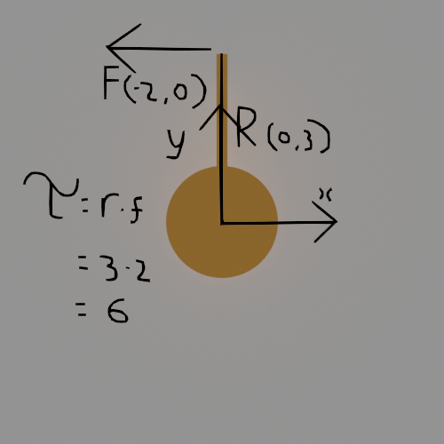

Vladimir Kataev's website
Torque is quite simple: It is the rotational force applied upon an axis.
This can be calculated simply, trigonometrically, or by vector cross product.
As convention: Torque is labelled with the greek letter Tau.
The Simple Approach
"It's in the unit ..."
lb-ft = pounds * feet (But please use a real unit like n-m)
Force * Distance
